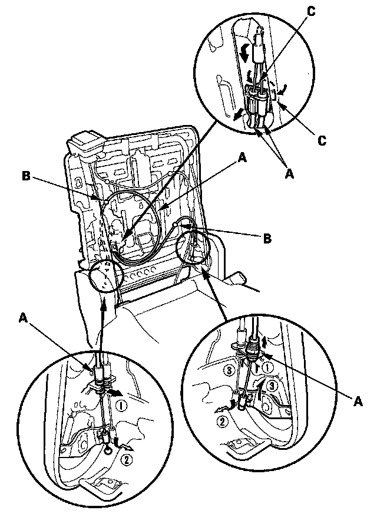
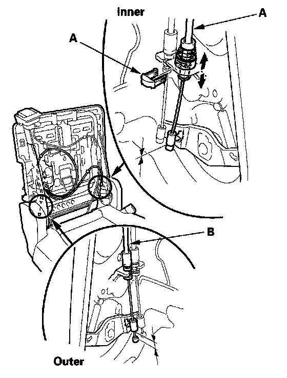

Third Row Seat Access Cable
Third Row Seat Access Cable ReplacementNOTE:
- Put on gloves to protect your hands.
- Take care not to bend the cable.
1. Remove the right second row seat.
2. Remove the right second row seat-back cover/pad from the seat-back frame

3. Disconnect the third row seat access cable (A) and detach the clips (B), then remove the cable by pinching the hooks (C) of the holder.

4. Install the cable in the reverse order of removal, and note these items:
- Make sure each cable is connected securely.
- If necessary, remove the clip (A), then adjust the inner side end of the third row seat access cable (A) to obtain no clearance between the cable end and the recline lever fitting.
- Fix at the middle groove in the outer side end of the third row seat access cable to obtain a clearance between the cable end and the recline lever fitting.
- Check the third row seat access operation: When operating the third row seat access knob, the inner recline adjuster is unlocked first, the outer recline adjuster is unlocked next, then the seat-back is tilted forward and the seat is allowed to slide forward.